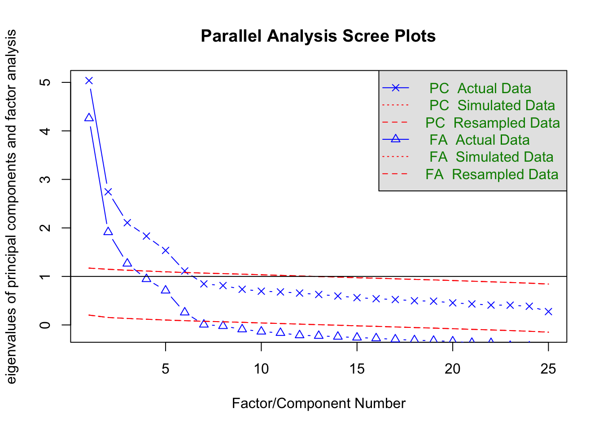
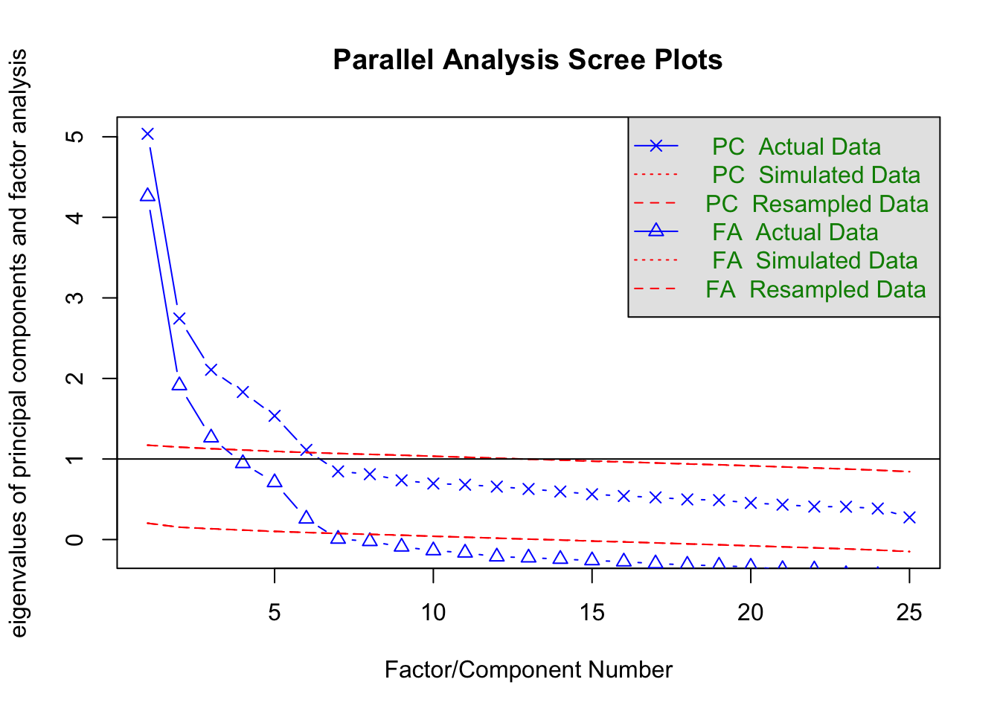

library(tidyverse)
library(psych)
dat <- psych::bfi |> select(-gender,-education,-age)
# 並行分析
fa.parallel(dat)
Parallel analysis suggests that the number of factors = 6 and the number of components = 6 ここでは心理系で最もよく使われる分析法のひとつ，因子分析を中心に多変量解析の全体的な解説を行う。 多変量解析はその名のとおり，変数が多く含まれるデータの解析であり，その目的は情報の要約にある。多くの変数が含まれる時にひとつ一つの変数を解釈していくのは大変な労力であるから，要領よくまとめることができればそれに越したことはないからである。
この目的から派生して，多変量解析にはさまざまな意味解釈が付随する。以下にモデルの解釈と対応する多変量解析技術を列記してみた。
これらのモデルに共通する本質的な特徴は「変数間関係をデータから見出すこと」である。変数間関係をどのようなもので表現するかによって，多少モデルの扱い方は変化する。一般的には分散共分散(相関係数)を変数間関係とするが，この場合は間隔尺度水準以上のデータが得られていることが必要になる。もし順序尺度水準でしか得られていないのであれば，ピアソンの相関係数の代わりにポリコリック相関係数やポリシリアル相関係数と呼ばれる相関係数を用いることになる。0/1のバイナリデータの場合はさらに特殊で，ピアソンの相関係数の代わりにテトラコリック相関係数を用いることになる。
変数間関係は必ずしも相関係数だけではない。カテゴリカル変数の場合は，あるカテゴリと他のカテゴリが同時に選択される・発生する頻度(共頻関係)を，その変数間関係の指標として捉えることができる。共頻関係を分析する手法としては双対尺度法(西里 2010) (対応分析や数量化III類と原理的に同じ)などが知られている。このようなカテゴリデータの分析は，自由記述などの自然言語を形態素解析し，多変量解析で分析するテキストマイニングなどで応用されている。
また，変数間関係を変数同士の類似度，すなわち距離であると考えることもできる。距離の公理を満たすデータがあれば，それを元に多次元尺度構成法(高根 1980; 岡太 and 今泉 1994)で可視化したり，クラスター分析で分類(新納 2007; 足立 2006)したりすることができる。
さらに，相関係数は変数間の直線的な関係の強さを意味するが，隠れた変数による擬似相関の可能性も含まれるため，偏相関係数を使って周囲の変数からの影響を統制した変数間関係を考えることもある。この手法はグラフィカルモデリング(宮川 1997)やネットワーク分析(アデラ＝マリア et al. [2022] 2024)で用いられるものである。
いずれにせよ，こうした変数間関係をもとに，外的な基準があればそこに対するフィッティングを目的として未知数を推定するし，外的な基準がなければモデル的仮定に基づいてデータから構造化していくことになる。またその目的の基本は情報の要約であるが，可視化に重点をおいたモデルや潜在得点の推定に重点を置いたモデルなど，各種モデルによって得意とする場所や理論的に強調されるところは異なる。
やや本筋から外れるが，こうした多変量を同時に扱うための数学的基盤として，線形代数の知識が必要となることが少なくない。線形代数はベクトルや行列の演算体系であり，その利点は「計算」と「可視化」を統合する観点を得られるところにある。より深く理解したいものにとっては，これらの学習も合わせて行うことを期待する。
ここでは心理学で最もよく用いられる手法の一つである，因子分析法について概説する。 因子分析法は測定についての統計モデルである。類似の手法として主成分分析があげられるが，主成分分析は測定のモデルというより要約のモデルというべきである。
因子分析のモデルは次の式で表される。 \[ z_{ij} = a_{j1}f_{i1}+a_{j2}f_{i2}+cdots+a_{jm}f_{im}+d_jU_{ij} \]
ここで\(z_{ij}\)は個人\(i\)の項目\(j\)に対するスコアを標準化したものである。\(a_{j.}\)は項目\(j\)の因子負荷量(factor loadings)，\(f_{i.}\)は個人\(i\)の因子得点(factor score)，\(d_j\)は項目\(j\)の独自因子負荷量，\(U_{ij}\)は項目\(j\)に伴う個人\(i\)の独自因子得点である。\(a_{j.}\)で表される\(m\)個の因子を共通因子と呼ぶ。一般に\(m\)は項目数\(M\)よりもかなり小さい。例えば性格検査のBIG-fiveは\(M=25\)で\(m=5\)である。YG正確検査は\(M=120\)で\(m=12\)である。この意味で多変量解析の目的の一つ，情報圧縮のモデルであるということもできる。
これに対して主成分分析は次のように表される。 \[ P_{i} = w_1X_{i1} + w_2X_{i2} + \cdots + w_MX_{iM} \]
ここで\(X_{i.}\)は個人\(i\)の項目\(j\)に対する反応を表し，この重み付き線型結合で主成分\(P\)を形成する。ここでの未知数は\(w_j\)であるから，一つの合成変数に作るための最適な重みを見つけることが目的となる。その基準の一つが，生成される合成変数\(P\)が個人\(i\)の特徴を最大限際立たせるように，すなわち\(P_i\)の分散を最大にすることと考える。もちろん一つの合成変数で\(M\)個の変数が持つ情報をすべて反映させることは難しいので，第二，第三の合成得点(主成分)を作ることも可能である。
そうすると，情報圧縮という観点から見た\(m\)個の共通因子，\(m\)個の主成分の違いは何だろうか。これはすでに述べたように，因子分析は測定のモデルなので，得られたデータ\(z_{ij}=\frac{X_{ij}-\bar{X_j}}{\sigma_j}\)には誤差\(d_jU_{ij}\)が含まれていると考えているのに対し，主成分分析では\(X_{ij}\)にそれを仮定せず，得られた値をそのまま用いているところが異なる。
実践的な面では，心理尺度のような反応に誤差が仮定されるものには因子分析を用い，公的な記録など値に誤差が想定されないものには主成分分析を用いることが相応しい。因子分析が心理学やテスト理論の領域で広まり，主成分分析が経済学，商学，社会学の領域で広まったのはそうした背景による。
計算論的には，いずれも変数間関係を元に最大限説明できる要素を抽出するというところで，行列の固有値分解を用いるという点が同じであるから，統計パッケージによっては同じメニューで異なる出力になっているものも少なくない。しかし上で述べたように，モデルの設計上の違いがあることは知っておいて損はないだろう。また，因子分析は変数間関係として相関行列を，主成分分析は分散共分散行列を用いることが多い。これは因子分析を用いる心理学的な領域では，測定値に絶対的な意味がなく相対的な意味(ex.より外向的，より内向的)しかないことに対し，他の社会科学領域では絶対的な意味がある(ex.国家間の貿易黒字・赤字の額など)場合が多いからである。また，主成分分析は多くの変数を情報圧縮する目的で第一主成分のみに注目することが多いのに対し，因子分析は測定しているものの考え方から複数の因子を考えることが多い。因子分析において単因子で考えるか多因子で考えるかについては，知能検査において知能を一般的な単一の因子で考えるのか，各領域に対応する複数の因子があるのかといった，理論的な相違がその黎明期にみられたことを反映している。
類似の手法ではあるが，こうした背景を知っておくことで適切な手法を用いることができるようになるだろう。
特に断りなく単に因子分析というとき，探索的因子分析を指すことが多い。探索的というのは，因子負荷量(因子から項目へのパス係数，因子と項目の関係の強さを反映したもの)はもちろん共通因子の数についても事前に定めず，データから因子構造を探ることを目的とするものだからである。
探索的因子分析は次のステップで進められる。
もちろん分析に入る前に，分析対象となるデータの記述統計や可視化を通じて基本的な項目属性を把握していることが前提である。
因子分析を数学的に語れば，\(M\)個の項目相互の相関係数を表した相関行列\(\mathbb{R}\)を固有値分解することに尽きる。相関係数はピアソンの積率相関係数を用いることが一般的であるが，項目が順序尺度水準であるとかバイナリ変数であるとかいった場合は，それに応じた相応しい相関係数を用いる。
固有値分解とは相関行列の次元性を見ることでもある。\(M\)個の項目もつ情報は\(M\)次元あると考える。例えば2変数\(X,Y\)があれば，変数\(X\)をx軸，変数\(Y\)をy軸に取った2次元空間に核反応をプロットすることでデータ全体の関係を表現できるだろう。しかしこれらの二変数が相関しているなら，変数\(X,Y\)を直交させた空間で表現する必要は必ずしもなく，より分散の大きくとれる二次元基底を見つけることができるに違いない。これが因子分析，主成分分析に共通する考え方であり，最大の分散を持つ次元に注目するのが主成分分析，多次元のなかで有用な次元を共通因子，それ以外を誤差因子と区別して多因子(多次元)で考えるのが因子分析である。
ここで共通因子の数を決めるのは分析者であり，「有用な次元」の決定は主観的な側面を含むことに注意しよう。もちろんデータの構造から適した次元数を考える手法はいろいろ提案されており，昨今はより客観的基準で因子数を決定するのが一般的であるが，数学的な特徴から実践的な意味合いをもつ共通次元とみなすのは，あくまでも分析者の責任において行われるものである。
因子数を決定する手法として，スクリープロットをつかった平行分析がある。 次のコードを見ながら具体的に見ていこう。分析にはpsychパッケージを用い，データはpsychパッケージの持つサンプルデータ，bfiを用いる。 これは性格テストのビッグファイブ因子それぞれについて5項目で測定したデータである。
library(tidyverse)
library(psych)
dat <- psych::bfi |> select(-gender,-education,-age)
# 並行分析
fa.parallel(dat)
Parallel analysis suggests that the number of factors = 6 and the number of components = 6 データ行列から得られる固有値の大きい順に折れ線グラフを描いたものを，スクリープロットという。 デフォルトではPCすなわち主成分分析Principle Component Analysisのスクリープロットと，FAすなわち因子分析Factor Analysisのスクリープロットが表示されている。この違いは上で述べたように，データに誤差を仮定するかどうかの違いにある。因子分析はこれを仮定するため1つの項目のもつ情報量が1単位以下になる(相関係数\(r_{jj}\)が\(1.0\)より小さくなる。正確には，\(r_{jj} = 1-h_j^2 = u^2 < 0\)であり，ここで\(h_j^2\)は共通性と呼ばれる共通因子負荷量の二乗和，\(u_j^2\)は独自性因子負荷量の二乗和)ため，主成分分析のそれより必ず低くなる。
プロットされているのはActual Data, Simulated Data, Resmapled Dataとなっているのがわかるだろう。実際のデータは何らかの意味構造を有しているだろうから，その相関関係にも偏りが生じ，よく説明できる次元とそうでない次元とが生まれるため，徐々に減衰するカーブで表示される。これに対してSimulated Dataは同じサイズの乱数データから，Resampled Dataは実際のデータをごちゃ混ぜにした行列を作って得られた固有値構造を表している。乱数や撹拌したデータは実際の意味構造を持たず，どの次元も均等に無意味になるため，フラットな線で表示されるだろう。このフラットな線と実データの線を比べ，フラットなラインよりも大きな意味がある次元は無意味ではない，と考えて因子数を決めるのが平行分析の考え方である。この考え方に基づくと，因子分析解も主成分分析解も6因子(6成分)がてきせつであるということになる。
なお図中には固有値が1.0のところにもラインが引かれている。これはかつて使われていたガットマン基準というもので，項目1つ分の分散も持たないような因子は共通因子たり得ない，という考え方である。この考え方によると3因子が妥当ということになる。ただし判断の基準として，共通因子で分散全体の何%を説明したか，というのもあり，たとえば3因子までで50%も説明しないようであれば半分以上の情報を捨てることになるから，4，5因子まで採用するという考え方もあり得る。
因子の数が決まると，その過程のもとで因子負荷量の推定に入る。例えば次のようにして結果を得る。
result.fa <- fa(dat, nfactors = 6, fm = "ML", rotate = "geominQ")要求されたパッケージ GPArotation をロード中ですpsychパッケージのfa関数は実に多くのオプションを持っているが，ここでは因子数(nfactors)，推定法(fm)，回転法(rotate)の3つを指定した。 因子数はすでに述べたので，推定法と回転法について解説する。
推定法は，ここでは最尤法(ML)を指定した。サンプルサイズが200を超えるような大きなデータであれば，多変量正規分布のもとからデータが得られたと仮定して因子負荷量を推定するのが最も適切だろう。サンプルサイズが小さい場合は，最小二乗法系列(ULS,OLS,WLS,GLSなど)の推定法を指定し，データとモデルのずれを最も小さくするような手法にするのが良い。特段の指定がなければ最小残差法(minres)が選ばれる。これは最小二乗法と同じだが，アルゴリズムが改善されていて収束しやすいという特徴がある。推定法として主成分解(pa)を選べば，残差を推定しないモデルとなる。アルゴリズムの違い，仮定の違いなどでいろいろ変えうるが，基本的にこれで大きく変化が出るようなものではない。
回転法は因子負荷量を推定した後で，さらに解釈をしやすくするためのものである。因子分析や主成分分析は，データの持ってる空間的特徴の軸を見つけ直すという説明はすでにした通りだが，この軸は原点こそ決まっているが，線形代数的変換によって軸を任意の方向に回転させることができる。であれば最も解釈がやりやすい方向に回転させるのが実践上便利である。この解釈がやりやすい方向というのを数学的に言い換えるならば，一つは項目と因子の関係が単純構造にあることだろう。単純構造とは，ある項目が特定の因子に寄与しているのなら，そのほかの因子には寄与していないということである。例えば，外向性を測定する項目が第1因子に重く負荷しているのであれば，第2,3,4,5因子には負荷していないほうが解釈しやすい。因子はデータの空間的特徴を表す軸(次元)なのだから，事後的にその軸がの意味であったかを考察する必要があるので，「この因子はこの項目にもあの項目にも影響している」という状況は悩みの種だからである。
この基本方針のもと，いくつかの計算法が考えられている。もっとも古典的なバリマックス回転は，因子負荷量の二乗和の分散が最大になるように回転角を定める。ほかにも，オブリミン回転やジオミン回転などさまざまな回転方法が考えられており，これらについて詳しくは 小杉 (2018) などを参照されたい。 また，回転方法は大きく分けて斜交回転と直交回転とに分けられる。直交回転は回転後の軸が直交する，すなわち因子間相関を仮定しない方法であり，斜交回転は因子間相関を仮定する回転方法である。後者の方が数学的な仮定が緩いため，分析の手順としてはまず斜交回転を行い，因子間相関が十分にひくく直交をかていできるなら直交回転をやり直す，という方法をとるべきである。ちなみにここではgeominQというジオミン回転の斜交版を適用して結果を出力している。
Bernaards and Jennrich (2005) パッケージには多くの回転法が含まれており，回転法をrotateオプションで選択することができるので，ヘルプなどを見て理解を深めて欲しい。
因子軸の回転についても，推定法と同じように絶対的な基準はなく，それぞれの考え方や仮定に基づくアルゴリズムの違いがあるだけである。推定法と違って，因子負荷量は異なる回転法を施すと大きく変わることがある。因子軸の回転は解釈を容易にするためのものであるから，分析者にとって都合の良い回転方法を指定していいが，その回転方法が何で，どういう仮定があるのかについては，自身の言葉で説明できるようになっていた方がいい。
推定法，回転法についての概略を踏まえた上で，結果を見てみよう。
print(result.fa,sort = T, cut=0.3)Factor Analysis using method = ml
Call: fa(r = dat, nfactors = 6, rotate = "geominQ", fm = "ML")
Standardized loadings (pattern matrix) based upon correlation matrix
item ML1 ML2 ML5 ML3 ML4 ML6 h2 u2 com
E2 12 0.70 0.55 0.45 1.0
E1 11 0.58 0.39 0.61 1.4
N4 19 0.51 0.35 0.48 0.52 2.0
E4 14 -0.50 0.33 0.56 0.44 2.2
E5 15 -0.41 0.40 0.60 2.8
N2 17 0.84 0.69 0.31 1.1
N1 16 0.83 0.71 0.29 1.1
N3 18 0.61 0.52 0.48 1.3
N5 20 0.33 0.37 0.34 0.66 2.8
A2 2 0.70 0.50 0.50 1.2
A3 3 0.65 0.51 0.49 1.1
A1 1 -0.57 0.37 0.33 0.67 1.8
A5 5 0.50 0.48 0.52 1.7
A4 4 0.42 0.28 0.72 1.7
C2 7 0.67 0.50 0.50 1.2
C4 9 -0.60 0.35 0.55 0.45 1.9
C3 8 0.54 0.31 0.69 1.1
C1 6 0.53 0.35 0.65 1.4
C5 10 -0.51 0.43 0.57 1.8
O3 23 0.67 0.48 0.52 1.0
O1 21 0.58 0.34 0.66 1.1
O5 25 -0.49 0.41 0.37 0.63 2.0
O2 22 -0.40 0.34 0.29 0.71 2.3
O4 24 0.40 0.40 0.25 0.75 2.4
E3 13 0.38 0.48 0.52 3.0
ML1 ML2 ML5 ML3 ML4 ML6
SS loadings 2.34 2.25 2.00 1.89 1.77 0.82
Proportion Var 0.09 0.09 0.08 0.08 0.07 0.03
Cumulative Var 0.09 0.18 0.26 0.34 0.41 0.44
Proportion Explained 0.21 0.20 0.18 0.17 0.16 0.07
Cumulative Proportion 0.21 0.41 0.59 0.77 0.93 1.00
With factor correlations of
ML1 ML2 ML5 ML3 ML4 ML6
ML1 1.00 0.24 -0.36 -0.20 -0.28 -0.08
ML2 0.24 1.00 -0.01 -0.12 0.05 0.25
ML5 -0.36 -0.01 1.00 0.19 0.28 0.26
ML3 -0.20 -0.12 0.19 1.00 0.14 0.04
ML4 -0.28 0.05 0.28 0.14 1.00 0.11
ML6 -0.08 0.25 0.26 0.04 0.11 1.00
Mean item complexity = 1.7
Test of the hypothesis that 6 factors are sufficient.
df null model = 300 with the objective function = 7.23 with Chi Square = 20163.79
df of the model are 165 and the objective function was 0.36
The root mean square of the residuals (RMSR) is 0.02
The df corrected root mean square of the residuals is 0.03
The harmonic n.obs is 2762 with the empirical chi square 661.28 with prob < 1.4e-60
The total n.obs was 2800 with Likelihood Chi Square = 1013.79 with prob < 4.6e-122
Tucker Lewis Index of factoring reliability = 0.922
RMSEA index = 0.043 and the 90 % confidence intervals are 0.04 0.045
BIC = -295.88
Fit based upon off diagonal values = 0.99
Measures of factor score adequacy
ML1 ML2 ML5 ML3 ML4 ML6
Correlation of (regression) scores with factors 0.90 0.93 0.89 0.87 0.86 0.78
Multiple R square of scores with factors 0.81 0.86 0.78 0.76 0.75 0.61
Minimum correlation of possible factor scores 0.61 0.72 0.57 0.53 0.49 0.22この出力ではsortオプションとcutオプションを指定した。sortオプションは因子負荷量の大きい順に並べ替えてくれるものであり，cutオプションは因子負荷量の表示を抑制するものである。あくまで表示上のオプションであり，実際は各因子から各項目へのパス(\(5 \times 25\)本)が計算されている。
まず表示されているのが因子負荷行列であり，項目の因子ごとの負荷量に加え，共通性\(h_j^2\)と独自性\(u_j^2=1-h_j^2\)，複雑度complexityが示されている1。なお，ここで表示されている因子負荷量などは回転後のパターン行列である2。
その下には負荷量の平方和SS loagingsがあり，これが説明する分散の大きさである。それを比率にしたもの(Proportion Var)，累積比率にしたもの(Cumulative Var)がある。今回は累積して44%の説明しかしていないことになるから，56%もの情報をカットしているので，情報圧縮の観点から言えば少し捨てすぎている危険性もある。
続いて，回転行列に斜交回転を指定しているから，因子間相関が出力されている。これを見ると絶対値最大で-0.36がみられる。全ての因子間相関が\(\pm 0.3\)に収まるようであれば，直交回転を考えても良い。
その後に出力されているのは適合度に関する指標である。各指標に関する解説は割愛する。
これは因子の複雑さを表す指標で、各項目(変数)がどれだけ単純に(あるいは複雑に)因子に負荷しているかを表す指標である。値が1に近い場合，その項目は基本的に1つの因子にのみ強く負荷することあらわしている。値が大きくなるほど、その項目が複数の因子に分散して負荷していることになる。この値は，項目\(j\)の因子\(k\)に対する負荷量を\(a_{jk}\)としたとき，\(\frac{(\sum_k a_{jk}^2)^2}{\sum_k a_{jk}^4}\)で算出する。↩︎
斜交回転の場合は，因子軸の負荷量をどう考えるかによって因子パターンと因子構造とに分かれる。因子パターンは変数を斜交座標系に直交に投影した影のようなものであり，変数から因子への直接的な効果を表すと考えられる。因子構造は因子構造は変数を各因子軸に平行に投影した影のようなものであり，変数と因子の間の単純相関を表している。↩︎